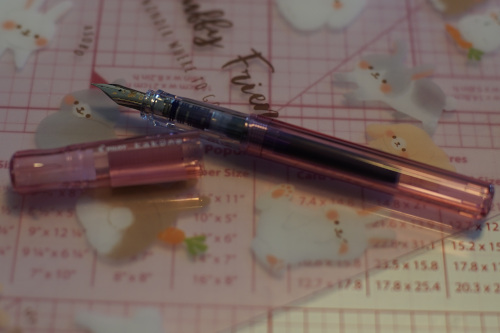

I've been a little pen hyped lately for absolutely no good reason. I've never owned a fountain pen before but I think the little face on the nib is just too cute! I waited like a week to be sure I actually wanted it before actually ordering.

I ordered the pen and a bottle of Herbin violet scented ink, which I have wanted since pompon told me about it 2 months ago. I didn't own anything to use it in at that point, but I LOVE violet scented everything and I'll pretty much anything if I see it.
I ordered them from JetPens on 5/30 and the package showed up 6/3. No complaints about the order at all.
I didn't order a converter and I didnt wan't to make it through the black included ink, so I took a syringe and removed the black ink (it's still in the syringe) and filled the cart with violet ink. Ihere was 1 mL in the cartridge but I wasnt able to get a full 1 mL back in.
It smells so good! It's not overwhelmingly strong and smells like my yard in early spring. I dont expect the smell to last long on the paper, but it makes using the pen extremely enjoyable. Ryan thinks it smells like a new box of diapers so do not buy this if you are Ryan. I really do want to try the other scents sometime. Chocolate? Rose? Yes, please.
I really like this pen so far. Super cute, great smell, but... it bleeds through the paper of my journal so I'll keep using my Little Twin Stars Signo until next year when I have a journal with thicker paper. I have other things I can write on right?? I can't stop sniffing this d*ng pen.
Surprisingly, I wasn't the big spender today!

includes speakers and mouse
Ryan made me buy it for him so he will be getting it for his birthday.
Congo!!! I love Congo!!! This version of Congo is longer than the Congo from the greatest hits album?! It's my favorite Genesis song.
I have no idea what this is but I figure Ryan will watch it with me soon

I was honestly really shocked to see this computer at the thrift store. I've heard the manager deny a sale of a CD because it was a home burnt CD that she couldn't verify the contents of. And she sold a computer with 3 hard drives full of photos and personal information?! Maybe she just doesnt know what computers are used for idk
It's running XP and fully functional. We looked through the files and found some incredibly unspicy documents. So unspicy that when we did find pornhub in the browser history, we didn't even believe the original owner was the one to look it up. Probably just some kid had access to it before it was donated.

I opened the door to a package this morning! That's not that surprising because books show up all the time, but the sender was GSC?! What could GSC possibly be sending me?!

Ryan ordered it like a year and a half ago and already forgot about it. He made me guess who it was. I got it right, for the record.

Nendoroid 445! Good thing I know enough hiragana to read Renge!!!!!! The bonus was some little hair buns.


She is finally here and she is cute!!!

I love tanuki. I'm very proud to announce Ryan put tanuki on my shelf. I will take good care of him.

I clicked on a t.a.t.u live on youtube the other day. i kinda found it disturbing. Like, I love the music but this is like the definition of child exploitation. I think I have to stick to the CDs from now on.
The other day I came across a song on YouTube that I recognized that didn't know the name of. I decided not to add it to a list or anything because I knew it would be in my history. I heard it on the radio the next day then went back to my history to find it... and it was completely gone!! I must have heard it on "youtube mix" which doesnt appear to add videos to your history. It was very frustrating but I did eventually find the song was Laura Branigan - Self Control. It's very catchy! I recommend it.
I found a dvd drive (in the trash) and put it in my computer. I can finally rip the half of my disks it couldn't read before!! I put a lot of albums on my phone but its not like I have functional headphones to listen to them with anymore. Both of my pairs no longer work on one side. RIP. I do have a bluetooth speaker in my cubbyhole which is nice to have around while making food.